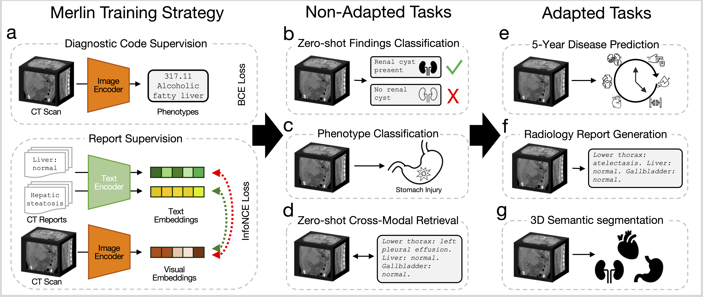
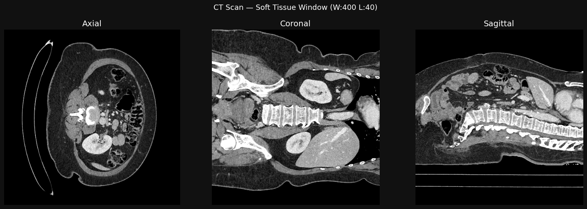

class TextEncoder(nn.Module):
def __init__(self):
super().__init__()
self.tokenizer = AutoTokenizer.from_pretrained("yikuan8/Clinical-Longformer")
self.text_encoder = AutoModel.from_pretrained("yikuan8/Clinical-Longformer")
self.text_encoder.gradient_checkpointing_enable()
self.linear_layer = nn.Linear(768, 512)
def forward(self, text_labels):
text_labels = [sanitize_report(text) for text in text_labels]
inputs = self.tokenizer(
text_labels,
return_tensors="pt",
padding=True,
truncation=True,
max_length=1024,
)
inputs = {k: v.to(self.text_encoder.device) for k, v in inputs.items()}
text_embeddings = self.text_encoder(**inputs).last_hidden_state[:, 0, :]
text_embeddings = self.linear_layer(text_embeddings)
return text_embeddingsIntroduction

Notes
Introduction
Training strategy and foundation model called Merlin that leverages the structured and unstructured data within hospitals to train an abdominal CT visual model. Using this training strategy, we train a vision-language model on a single GPU using paired CTs (6,387,231 images from 15,331 CTs), EHR diagnosis codes (1,839,559 codes), and radiology reports (6,036,645 tokens). Merlin allows processing the entire 3D voxel data in a CT image at once.
Medical imaging presents the opportunity to capture supervision signal from both the structured information in the EHR, as well as the unstructured information in radiology reports. We focus on abdominal CT images, as abdominal CTs are the most common 3D imaging examination.
Evaluation
The non-adapted tasks that we evaluate Merlin on include zero-shot classification (31 classification tasks; Figure 1b), phenotype classification (692 classification tasks; Figure 1c), and zero-shot cross-modal retrieval (image to findings and image to impressions; Figure 1d). The adapted tasks that we evaluate Merlin on include 5-year disease prediction (6 classification tasks; Figure 1e), radiology report generation (Figure 1f), and 3D segmentation (20 organs; Figure 1g). We report that training Merlin required approximately 160 hours on a single NVIDIA A6000 GPU.
MerlinArchietecture
Class definition can be found in build.py.
MerlinArchitecture uses two sub-classes, TextEncoder and ImageEncoder
Text Encoder
The TextEncoder class uses a pretrained Clinical-Longformer model to encode radiology report text into embeddings. The forward method takes in a list of text labels (radiology reports), sanitizes them, tokenizes them, and passes them through the Clinical-Longformer to obtain text embeddings. The resulting embeddings are then passed through a linear layer to reduce their dimensionality from 768 to 512.
ImageEncoder
class ImageEncoder(nn.Module):
def __init__(
self,
ImageEmbedding: bool = False,
PhenotypeCls: bool = False,
FiveYearPred: bool = False,
):
super().__init__()
self.ImageEmbedding = ImageEmbedding
self.PhenotypeCls = PhenotypeCls
self.FiveYearPred = FiveYearPred
resnet = torchvision.models.resnet152(pretrained=True)
self.i3_resnet = i3res.I3ResNet(
copy.deepcopy(resnet),
class_nb=1692 if not self.FiveYearPred else 6,
conv_class=True,
ImageEmbedding=self.ImageEmbedding,
PhenotypeCls=self.PhenotypeCls,
FiveYearPred=self.FiveYearPred,
)
def forward(self, image):
if self.ImageEmbedding:
contrastive_features = self.i3_resnet(image)
return contrastive_features
elif self.PhenotypeCls:
return self.i3_resnet(image)
elif self.FiveYearPred:
return self.i3_resnet(image)
else:
contrastive_features, ehr_features = self.i3_resnet(image)
return contrastive_features, ehr_featuresThe three flags ImageEmbedding, PhenotypeCls, FiveYearPred select one of Merlin’s evaluation/inference modes from the paper. The default — all False — gives you the full multi-task pretraining output.
ImageEmbeddingmode produces a contrastive image embedding for retrieval tasks.PhenotypeClsmode produces multi-label phenotype predictions for EHR tasks over 1,692 hierarchical PheWAS phenotypes.FiveYearPredmode produces multi-label disease predictions for 5-year disease prediction tasks over 6 diseases.- None of the flags produces both the contrastive image embedding and the EHR phenotype predictions, which is the full output of Merlin’s multi-task pretraining.
Forward method:
- ImageEmbedding mode: passes the input image through the i3_resnet and returns the contrastive features for retrieval tasks.
- PhenotypeCls mode: passes the input image through the i3_resnet and returns the 1692-dim multi phenotype predictions for EHR tasks.
- FiveYearPred mode: passes the input image through the i3_resnet and returns the 6-dim multi disease predictions for 5-year disease prediction tasks.
- Default mode (all flags False): passes the input image through the i3_resnet and returns both the contrastive features and the EHR phenotype predictions, which is the full output of Merlin’s multi-task pretraining.
MerlinArchitecture
The MerlinArchitecture class combines the TextEncoder and ImageEncoder to create the full Merlin model.
The init method initializes the three mutually-excluse mode flags (ImageEmbedding, PhenotypeCls, FiveYearPred) and creates instances of the TextEncoder and ImageEncoder with the appropriate flags. Also, it creates a temperature parameter for contrastive learning.
The forward method is essentially a mode dispatcher with input validation. It checks which mode is active based on the flags and processes the input accordingly:
- If
ImageEmbeddingmode is active, it processes the input image through theImageEncoderand returns the contrastive features. - If
PhenotypeClsmode is active, it processes the input image through theImageEncoderand returns the phenotype predictions. - If
FiveYearPredmode is active, it processes the input image through theImageEncoderand returns the disease predictions. - If none of the mode flags are active, it processes the input image through the
ImageEncoderto get both the contrastive features and the EHR phenotype predictions, and returns both. Also, if text labels are provided, it processes them through theTextEncoderto get text embeddings and returns those as well.
Demo
We borrow a gpu_1x_a100_sxm4 instance (1 A100 GPU with 40GB of VRAM) from Lambda Cloud for the demo. The model can be loaded and run on this instance without any out-of-memory errors, demonstrating that Merlin can be trained and run on a single GPU. This instance currently costs $1.99/hour on Lambda Cloud.
Sample Image of an CT scan with the corresponding radiology report:

Lower thorax: A small low-attenuating fluid structure is noted in the right cardiophrenic
angle, in keeping with a tiny pericardial cyst.
Liver and biliary: Normal.
Gallbladder: Normal.
Spleen: Normal.
Pancreas: Normal.
Adrenal glands: Normal.
Kidneys and ureters: Symmetric enhancement and excretion of the bilateral kidneys, with no
striated nephrogram to suggest pyelonephritis. Urothelial enhancement
bilaterally, consistent with urinary tract infection. No renal/ureteral
calculi. No hydronephrosis.
GI tract: Normal. Normal gas-filled appendix.
Peritoneal cavity: No free fluid.
Bladder: Marked urothelial enhancement consistent with cystitis.
Uterus and ovaries: Normal.
Vasculature: Patent.
Lymph nodes: Normal.
Abdominal wall: Normal.
Musculoskeletal: Degenerative change of the spine.Default: Contrastive Embeddings + Phenotype Predictions
model = Merlin()
model.eval()
model.cuda()First, we load the Merlin model and set it to evaluation mode. We also move the model to the GPU for faster inference.
The Merlin class is a wrapper around the MerlinArchitecture that we defined earlier. It provides a convenient interface for loading the appropriate model configuration based on the task and for performing inference with the model. By calling model.eval(), we set the model to evaluation mode, which disables certain layers like dropout and batch normalization that are only used during training. Finally, by calling model.cuda(), we move the model’s parameters to the GPU, allowing us to perform inference much faster than on a CPU.
The model configurations are listed in MODEL_CONFIGS, where the default configuration uses the MerlinArchitecture with the checkpoint for the default task, the report_generation configuration uses the Clip3DForTextGeneration architecture with its corresponding checkpoint, and the five_year_disease_prediction configuration uses the MerlinArchitecture with a different checkpoint specific to that task. The appropriate model is loaded based on the flags set for the task.
for batch in dataloader:
outputs = model(batch["image"].to(device), batch["text"])
print("\n================== Output Shapes ==================")
print(f"Contrastive image embeddings shape: {outputs[0].shape}")
print(f"Phenotype predictions shape: {outputs[1].shape}")
print(f"Contrastive text embeddings shape: {outputs[2].shape}")In this loop, we iterate over batches of data from a dataloader. For each batch, we pass the images and text through the model to get the outputs. We then print the shapes of the contrastive image embeddings, phenotype predictions, and contrastive text embeddings to verify that the model is producing outputs in the expected format. The batch["image"] is moved to the same device as the model (GPU) before being passed through the model. The outputs are expected to be a tuple containing the contrastive image embeddings, the phenotype predictions, and the contrastive text embeddings, which we print the shapes of for verification. This allows us to confirm that the model is correctly processing the input data and producing outputs of the expected dimensions.
Output:
================== Output Shapes ==================
Contrastive image embeddings shape: torch.Size([1, 512])
Phenotype predictions shape: torch.Size([1, 1692])
Contrastive text embeddings shape: torch.Size([1, 512])Image embeddings:
model = Merlin(ImageEmbedding=True)
model.eval()
model.cuda()
for batch in dataloader:
outputs = model(batch["image"].to(device))
print("\n================== Output Shapes ==================")
print(f"Image embeddings shape (Can be used for downstream tasks): {outputs[0].shape}")In this loop, we initialize the Merlin model with the ImageEmbedding flag set to True, which configures the model to produce contrastive image embeddings. We then set the model to evaluation mode and move it to the GPU. As we iterate over batches of data from the dataloader, we pass only the images through the model (since we are only interested in the image embeddings in this configuration) and print the shape of the resulting image embeddings. This allows us to verify that the model is producing image embeddings in the expected format, which can be used for downstream tasks such as retrieval or classification.
================== Output Shapes ==================
Image embeddings shape (Can be used for downstream tasks): torch.Size([1, 2048])Phenotype predictions:
Top 3 predicted phenotypes:
┏━━━━━━━━━━━━┳━━━━━━━━━━━━━━━━━━━━━━━━━━━━━━━━┳━━━━━━━━━━━━━┓
┃ Phencode ┃ Phecode Description ┃ Probability ┃
┡━━━━━━━━━━━━╇━━━━━━━━━━━━━━━━━━━━━━━━━━━━━━━━╇━━━━━━━━━━━━━┩
│ 785.0 │ Abdominal pain │ 0.9017 │
│ 1010.0 │ Other tests │ 0.6313 │
│ 1010.7 │ Persons with potential health │ 0.4420 │
│ │ hazards related to │ │
│ │ socioeconomic, psychosocial, │ │
│ │ and other circumstances │ │
└────────────┴────────────────────────────────┴─────────────┘Five year disease predictions:
Five year disease prediction probabilities:
┏━━━━━━━━━━━━━━━━━━━━━━━━━━━┳━━━━━━━━━━━━━┓
┃ Disease ┃ Probability ┃
┡━━━━━━━━━━━━━━━━━━━━━━━━━━━╇━━━━━━━━━━━━━┩
│ Cardiovascular Disease │ 0.4248 │
│ (CVD) │ │
│ Ischemic Heart Disease │ 0.2856 │
│ (IHD) │ │
│ Hypertension (HTN) │ 0.5327 │
│ Diabetes Mellitus (DM) │ 0.3722 │
│ Chronic Kidney Disease │ 0.3814 │
│ (CKD) │ │
│ Chronic Liver Disease │ 0.2831 │
│ (CLD) │ │
└───────────────────────────┴─────────────┘Radiology report generation:
Merlin Radiology Report: lower thorax: normal. liver and biliary tree: normal. gallbladder: normal. spleen: normal. pancreas: normal. adrenal glands: normal. kidneys and ureters: normal. gastrointestinal tract: no evidence of bowel obstruction. normal appendix (3/297). peritoneal cavity: no free fluid. abdominal wall: normal. bladder: normal. uterus and ovaries: the uterus is surgically absent with bilateral salpingo-oophorectomy. vasculature: patent. lymph nodes: normal. musculoskeletal: normal.